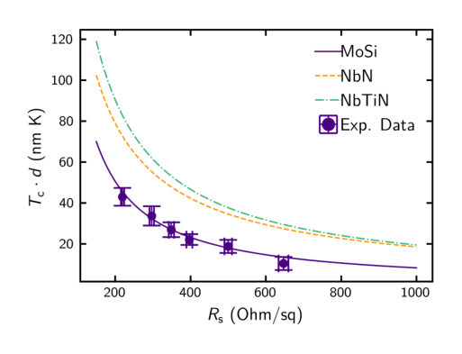
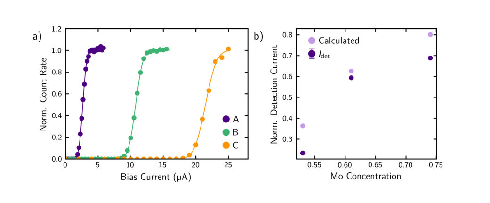
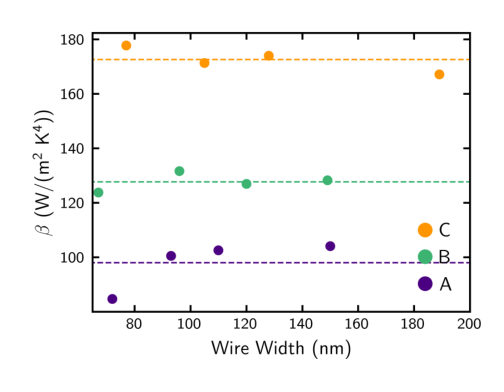
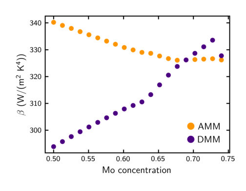
← Index · ← Previous · Next →
Authors: Na Li, Chen-Yue Li, Yu-Hong Zheng, Wen-Long Ma, Li-Hang Ren, Yan-Kui Bai
Type: theory · Category: quantum information and computing · PDF: https://arxiv.org/pdf/2605.26798v1
Analysis basis: full PDF text, analyzed in chunks
Topic relevance: entanglement & information structure 3/5 · quantum measurements 3/5 · correlated / nonlocal dissipation 2/5 · methods for driven-dissipative 2/5
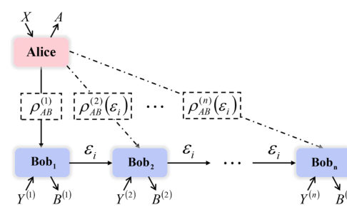
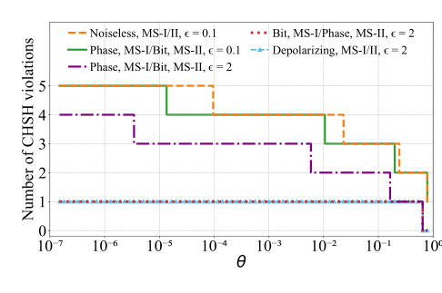
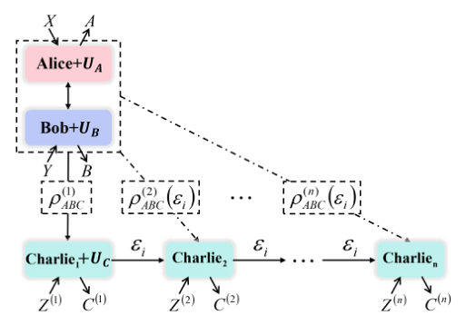
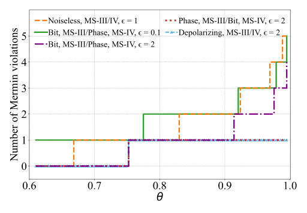
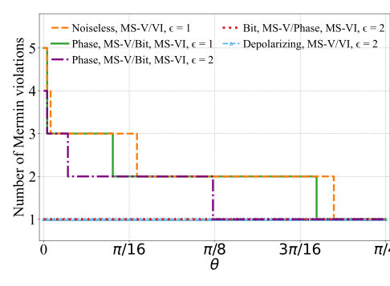
Summary. The paper demonstrates that sequential sharing of quantum nonlocality can be maintained indefinitely even under certain types of local noise, such as bit-flip or phase-flip channels, provided the measurement strategies are appropriately adapted. It introduces new measurement techniques and local operations that allow observers to switch between noise-immune regimes, though it confirms that depolarizing noise fundamentally destroys the ability to share nonlocality unboundedly.
Why it may be interesting. This work is highly relevant to open quantum systems and quantum networks, as it provides a framework for maintaining non-classical correlations in the presence of decoherence, which is a fundamental challenge in scalable quantum communication.
Main problem. Investigating the robustness of Sequential Quantum Nonlocality Sharing (SSQN) against local noisy quantum channels (phase-flip, bit-flip, and depolarizing noise).
Main result. Unbounded SSQN is possible for Bell, GHZ, and W states under specific noise-immune channels (phase-flip or bit-flip) by using optimized measurement strategies and local unitaries, but is destroyed by depolarizing noise.
Method. Theoretical analysis using the Kraus operator-sum formalism, the Lüders rule for state updates, and the construction of optimized POVM measurement strategies (MS-I through MS-VI).
Model / system. A sequence of independent observers (Bobs or Charlies) receiving a post-measurement qubit transmitted through local noisy quantum channels, starting from initial bipartite Bell states or tripartite GHZ and W states.
Key observables. CHSH inequality violation (for bipartite nonlocality) and Mermin inequality violation (for tripartite nonlocality).
Important parameters / regimes. Noise parameter p (probability of no error), measurement sharpness gamma, measurement rotation angle theta, and the number of sequential observers n.
Assumptions / limitations. The primary source of noise is the transmission of the post-measurement qubit through local channels; the specific type of noise is assumed to be known to allow for strategy switching.
Figures summary. Schematic diagrams of the SSQN protocols for bipartite and tripartite cases; plots showing the maximum number of observers capable of violating inequalities as a function of measurement angles and noise levels; and plots of CHSH/Mermin values under different noise-immune strategies.
Paper structure. The paper introduces the SSQN protocol, analyzes bipartite Bell nonlocality under various noise channels, extends the analysis to tripartite GHZ and W states, proposes new measurement strategies with local unitaries to switch noise immunity, and concludes with numerical demonstrations of double-violation.
Sequential sharing of quantum nonlocality (SSQN) is crucial for device-independent tasks in quantum information processing, wherein relaying the post-measurement qubit through a local quantum channel to a subsequent observer constitutes an essential operational step. Here we present a theoretical analysis of noise robustness of sequential sharing for bipartite Bell nonlocality and tripartite Mermin nonlocality under the influence of local phase-flip, bit-flip, and depolarizing quantum channels. It is established that arbitrarily many independent observers can sequentially share the quantum nonlocality of Bell, Greenberger-Horne-Zeilinger, and W states via specific noise-immune channels, whereas this feature of SSQN is destroyed under other noisy quantum channels. Furthermore, we demonstrate that the noise-immune channel enabling unbounded SSQN can be switched by employing our newly designed measurement strategies assisted by local operations on the initial entangled states. Moreover, as illustrative examples, we propose two concrete schemes for sharing bipartite Bell nonlocality and tripartite Mermin nonlocality with two sequential local observers on one side subject to local noisy channels. Our work establishes a practical framework for realizing the SSQN under noisy quantum channels, and reveals the connection between noise robustness and measurement strategies.
Authors: Gernot Akemann, Satya N. Majumdar, Patricia Päßler
Type: theory · Category: statistical mechanics · PDF: https://arxiv.org/pdf/2605.26945v1
Analysis basis: full PDF text, analyzed in chunks
Topic relevance: non-equilibrium dynamics 3/5 · driven-dissipative phase transition 2/5 · methods for driven-dissipative 2/5 · non-equilibrium universality 2/5
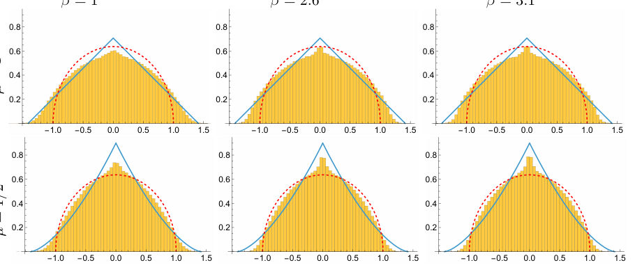
Summary. This paper extends the construction of a tridiagonal matrix-valued process to any Dyson index beta and explores how stochastic resetting affects its eigenvalues. It demonstrates that simultaneous resetting of matrix elements recovers the known dynamics of resetting Dyson Brownian motion and applies this to calculate the partition function of a disordered 1D lattice.
Why it may be interesting. It provides a new exact framework for studying non-equilibrium stationary states in random matrix models, which is highly relevant to understanding driven-dissipative many-body dynamics and disordered quantum systems.
Main problem. The paper aims to generalize a tridiagonal matrix-valued process to arbitrary Dyson index beta > 0 and investigate the effects of stochastic resetting on its eigenvalue dynamics.
Main result. The authors successfully construct a beta-TMP for any beta > 0 and prove that the simultaneous resetting of matrix entries (beta-SRTMP) leads to a stationary eigenvalue distribution matching the resetting Dyson Brownian motion.
Method. The study employs stochastic calculus (OU and CIR processes), renewal theory to handle resetting, and numerical simulations to compare different resetting regimes.
Model / system. The model consists of a symmetric tridiagonal matrix where diagonal entries follow Ornstein-Uhlenbeck processes and off-diagonal entries follow Cox-Ingersoll-Ross processes, applied to a 1D disordered quantum tight-binding Hamiltonian.
Key observables. Joint Probability Density Function (JPDF) of eigenvalues, average eigenvalue density, and the annealed partition function.
Important parameters / regimes. Dyson index (beta), resetting rate (r), drift (mu), diffusion (D), and matrix size (N).
Assumptions / limitations. The resetting is assumed to be Poissonian; the paper notes the difficulty in finding analytical solutions for the independent resetting (beta-IRTMP) case.
Figures summary. Figures show the average eigenvalue density for different beta values and compare the density profiles of the simultaneous (beta-SRTMP) and independent (beta-IRTMP) resetting ensembles.
Paper structure. The paper introduces the beta-TMP construction, derives the time-dependent and stationary distributions for simultaneous resetting, compares this to independent resetting via numerical simulation, and concludes with an application to a disordered 1D tight-binding model.
We introduce a symmetric tridiagonal matrix-valued process ($β$-TMP) $H(t)$ whose diagonal entries $H_{k,k}(t)$ evolve independently via an Ornstein-Uhlenbeck process starting at the origin and the off-diagonal entries $H_{k,k+1}(t)$ evolve independently via the Cox-Ingersoll-Ross process, starting at the origin and with parameters that depend on the row index $k$. We show that the joint distribution of the entries of the matrix can be computed exactly at all times and moreover, the joint distribution of its $N$ real eigenvalues can be computed exactly at all times too. We then subject this time-evolving matrix-valued process to stochastic resetting with rate $r$ in two different settings: (i) simultaneous resetting of the matrix entries to the origin with rate $r$ ($β$-SRTMP process) and (ii) independent resetting of the matrix entries to the origin with rate $r$ ($β$-IRTMP process). We show that the joint distribution of the eigenvalues of the $β$-SRTMP process at long times can be computed analytically and it coincides with the joint distribution of the positions of the resetting Dyson Brownian motion in its stationary state for arbitrary $β>0$. For the $β$-IRTMP stationary ensemble, computing analytically the joint distribution of eigenvalues or even the average density of eigenvalues is difficult. However, generating the stationary $β$-IRTMP ensemble numerically is relatively straightforward and we compare its numerical average eigenvalue density to the corresponding analytical results for the $β$-SRTMP stationary ensemble with same parameter values, showing that they are quite different from each other. Finally, we provide a simple and concrete application of this tridiagonal matrix-valued process in computing the annealed partition function of a disordered quantum tight-binding Hamiltonian on a one-dimensional lattice.
Authors: Daisuke Miki, Alfred Li, Yanbei Chen
Type: theory · Category: quantum information and computing · PDF: https://arxiv.org/pdf/2605.26240v1
Analysis basis: full PDF text, analyzed in chunks
Topic relevance: entanglement & information structure 3/5 · correlated / nonlocal dissipation 2/5 · non-equilibrium dynamics 2/5 · quantum measurements 2/5
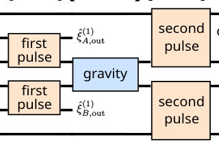
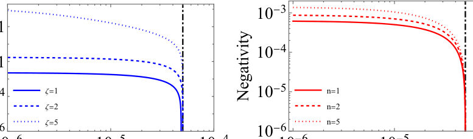
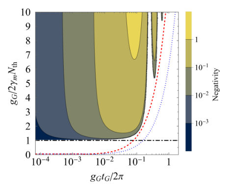
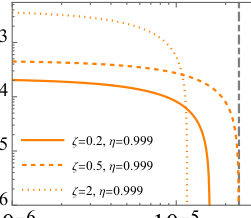
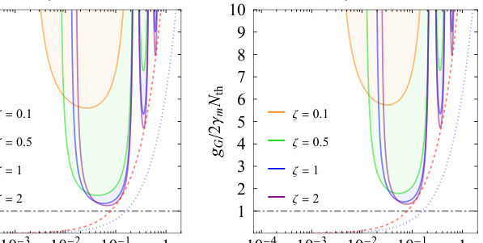
Summary. This paper demonstrates that while using squeezed or Fock states can increase the amount of entanglement generated by gravity in optomechanical systems, these states cannot overcome the fundamental threshold imposed by thermal decoherence. It also identifies how measurement inefficiency limits the detectable entanglement and suggests an optimal squeezing level to mitigate vacuum noise.
Why it may be interesting. It provides fundamental bounds on the observability of gravity-induced entanglement, bridging quantum optics (squeezing/state swap) with the search for the quantum nature of gravity and the study of open quantum systems under thermal noise.
Main problem. Investigating the generation, amplification, and detection limits of gravity-induced entanglement (GIE) between two massive objects in the presence of thermal decoherence and measurement loss.
Main result. While nonclassical input states (squeezed or Fock states) can amplify the amount of entanglement, they cannot lower the fundamental threshold for entanglement generation, which is strictly set by the competition between gravitational coupling and thermal decoherence ($g_G > 2\gamma_m N_{th}$).
Method. The authors use the input-output formalism, covariance matrix analysis for Gaussian states, and the PPT criterion for non-Gaussian states within a pulsed optomechanical framework.
Model / system. Two red-detuned pulsed optomechanical systems where mechanical masses are coupled via Newtonian gravity. The system uses a two-pulse protocol to swap optical states to mechanical modes, allow gravitational interaction, and read the state back to light.
Key observables. Entanglement negativity, output optical field quadratures, and gravity-induced squeezing.
Important parameters / regimes. Gravitational coupling strength ($g_G$), thermal occupation number ($N_{th}$), mechanical damping rate ($\gamma_m$), readout efficiency ($\eta$), and squeezing parameter ($\zeta$).
Assumptions / limitations. The Rotating Wave Approximation (RWA) is applied to the gravitational interaction; the optomechanical pulses are assumed to achieve complete state swap; and measurement loss is modeled as a local Gaussian attenuation channel.
Figures summary. Figure 1 shows the three-stage protocol schematic; Figure 2 compares entanglement negativity for different input states; Figure 4 illustrates the impact of measurement loss and the existence of an optimal squeezing level; Figure 5 maps the entanglement region in the parameter plane of coupling and interaction time.
Paper structure. The paper introduces the optomechanical protocol, derives the operator evolution and density matrix under thermal noise, analyzes entanglement amplification with nonclassical inputs, establishes the universal generation threshold, and concludes by investigating the impact of measurement loss and detection efficiency.
We investigate gravity-induced entanglement between the output optical fields of two red-detuned pulsed optomechanical systems with their masses coupled by mutual gravitational interaction. For each individual system, the optomechanical interaction realizes a beam-splitter state swap between an incident optical pulse and its mechanical mode. Using two rectangular pulses for each system -- the first to imprint a nonclassical state on the mechanical modes and the second to read the gravitationally generated entanglement back onto the outgoing light -- we show that the amount of entanglement can be amplified by preparing the input in a squeezed or Fock state. However, the threshold for entanglement generation is set by the competition between the gravitational coupling and thermal decoherence, $g_G>2γ_m N_{\rm th}$, and cannot be lowered by any choice of input state. We prove this bound for two-mode Gaussian inputs and show that it continues to hold for Fock-state inputs. We further analyze how imperfect detection modifies the threshold and identify the entanglement-annihilating and entanglement-breaking regimes, which are set by the thermal decoherence accumulated over the interaction time, independent of the gravitational coupling.
Authors: Tarvir Anjum Aditto, Jaiyan Sadid Ifty, Khondokar Zahin
Type: both · Category: quantum information and computing · PDF: https://arxiv.org/pdf/2605.26976v1
Analysis basis: full PDF text, analyzed in chunks
Topic relevance: QC/QI experiment 3/5 · quantum optics experiment 3/5 · spintronics-quantum-optics interface 3/5
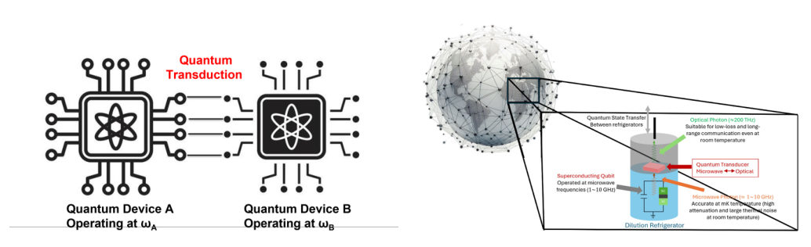
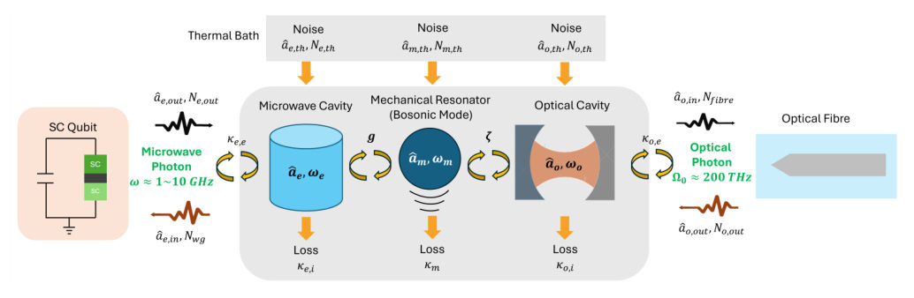
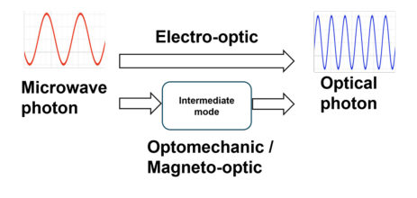
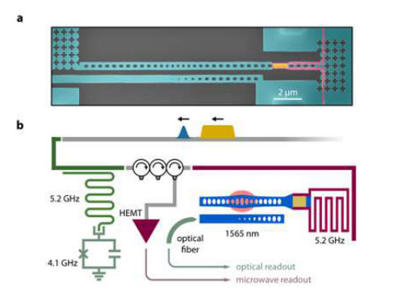
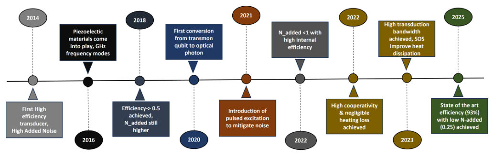
Summary. This review evaluates the state-of-the-art in microwave-to-optical quantum transduction, focusing on how different physical platforms can enable scalable quantum networks. It highlights the trade-offs between efficiency, bandwidth, and noise across optomechanical, electro-optic, and magneto-optic systems. The paper argues that a hybrid approach using these complementary technologies is essential for future large-scale quantum communication.
Why it may be interesting. It provides a critical overview of the hardware interfaces necessary for distributed quantum computing, specifically addressing the engineering of open quantum systems and the preservation of quantum states across vastly different frequency scales.
Main problem. The fundamental challenge of achieving scalable, high-efficiency, and low-noise microwave-to-optical quantum transduction to bridge the gap between superconducting processors and long-distance fiber networks.
Main result. The review identifies optomechanical systems as leaders in efficiency and low noise, electro-optic platforms as best for high bandwidth and integration, and magneto-optic platforms as providing unique non-reciprocal functionality.
Method. A comprehensive survey and comparative analysis of optomechanical, electro-optic, and magneto-optic transduction platforms using standardized metrics like internal efficiency and normalized decay rates.
Model / system. The paper analyzes three primary architectures: optomechanical (using phonons), electro-optic (using direct nonlinear Pockels effect), and magneto-optic (using magnons) as intermediate bosonic modes for frequency conversion.
Key observables. Conversion efficiency (total and internal), added noise (in quanta), bandwidth, and quantum capacity.
Important parameters / regimes. Cooperativity (em, om, eo), magnon decay rate, operating temperature (mK to 300K), and the efficiency threshold of 0.5 for positive quantum capacity.
Assumptions / limitations. The transduction processes are modeled as bosonic Gaussian attenuator channels.
Figures summary. Figure 10 presents an efficiency-bandwidth plane comparing the three platforms, showing their respective regimes and the quantum capacity threshold line.
Paper structure. The paper introduces the scaling bottleneck of quantum networks, details the physics and progress of the three main transduction platforms (OM, EO, MO), provides a quantitative comparison of their performance metrics, and concludes with future outlooks and integration challenges.
The development of scalable quantum networks requires coherent interfaces capable of converting microwave photons used in superconducting quantum processors into optical photons suitable for long-distance fiber transmission. This review surveys recent progress in microwave-to-optical quantum transduction across optomechanical, electro-optic, and magneto-optic platforms, with emphasis on conversion efficiency, bandwidth, added noise, and operating temperature. In addition to standard metrics, we propose the internal efficiency eta_in and the magnon decay rate kappa_m/2pi as normalized parameters that enable fairer comparison across heterogeneous implementations. Optomechanical systems achieve internal phonon-to-photon efficiencies of 93% with sub-quantum added noise of 0.25 quanta at millikelvin temperatures. Electro-optic devices based on LiNbO3 and AlN have advanced from room-temperature efficiencies below 1% to millikelvin systems with internal efficiencies approaching 99.5%, added noise as low as 0.16 quanta at 60 mK, and bandwidths extending to several tens of megahertz. Magneto-optic (optomagnonic) platforms exhibit the lowest efficiencies (typically $10^{-10}$ to $10^{-8})$, but offer intrinsic non-reciprocity and broadband magnonic operation, with emerging approaches based on topological heterostructures and magnon squeezing predicting enhancements up to $10^{-4}$. Optomechanical systems appear promising for high-fidelity quantum state transfer, electro-optic transducers for high-bandwidth coherent links, and magneto-optic devices for non-reciprocal network components. We discuss the fundamental trade-off between efficiency and added noise across all three platforms, and argue that heterogeneous microwave-optical transduction is emerging as a key enabling technology for distributed quantum computing and large-scale quantum networks.
Authors: Marcin Rudziński, Gianluigi Tartaglione, Karol Życzkowski
Type: theory · Category: quantum information and computing · PDF: https://arxiv.org/pdf/2605.26867v1
Analysis basis: full PDF text, analyzed in chunks
Topic relevance: entanglement & information structure 3/5 · correlated / nonlocal dissipation 2/5 · methods for driven-dissipative 2/5
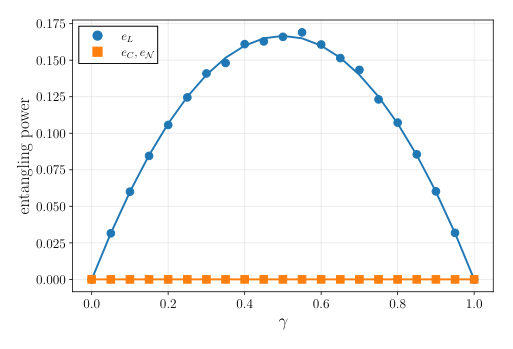
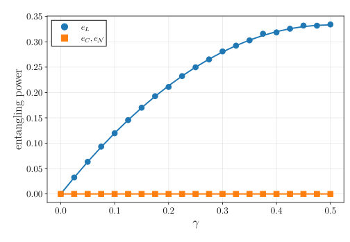
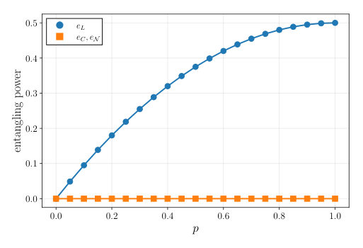
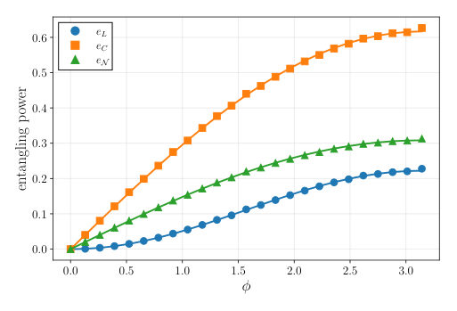
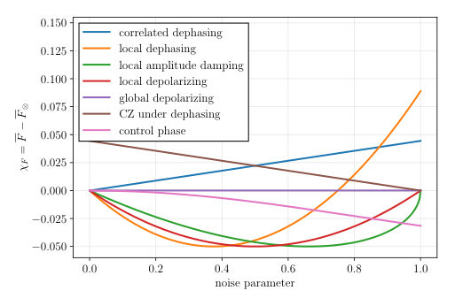
Summary. The paper addresses the failure of standard linear-entropy metrics to distinguish between entanglement generation and local noise. It introduces new, robust entangling power measures based on concurrence and negativity and provides analytical tools to predict how noise impacts entanglement in bipartite channels.
Why it may be interesting. This is highly relevant for researchers in open quantum systems and NISQ-era computing, as it provides more reliable metrics for characterizing how noise affects the ability of quantum gates to generate entanglement.
Main problem. Developing effective diagnostics for bipartite quantum channels to distinguish between genuine entanglement generation and mere increases in local impurity or mixedness.
Main result. The authors introduce new concurrence- and negativity-based entangling powers that correctly vanish for separable channels and provide analytical bounds for entanglement variation in noisy gates.
Method. The study uses Kraus representations, Weingarten calculus for Haar-random integration, and the analysis of local-unitary orbits and Schmidt coefficients.
Model / system. Bipartite quantum channels (specifically 2-qubit systems) acting on $d imes d$ dimensional spaces, including models for local noise (depolarizing, amplitude damping) and noisy entangling gates (CZ, CP).
Key observables. Average gate fidelity, product-state fidelity, fidelity-bias parameter ($\chi_F$), concurrence, negativity, and linear entropy-based entangling power.
Important parameters / regimes. Schmidt coefficients/angle ($ heta$), reduced-state purity ($\mu$), and noise parameters for dephasing and damping channels.
Assumptions / limitations. The derivation for orbit-resolved fidelity assumes equal local dimensions ($d_A = d_B$).
Figures summary. Figure 1 demonstrates the false-positive behavior of linear-entropy entangling power; Figure 7 compares numerical entangling power against analytical bounds; Figure 8 shows concurrence variation for a correlated phase-damping channel.
Paper structure. The paper introduces the problem of false positives in entangling power, derives closed-form formulas for fidelity across Schmidt orbits, proposes new entanglement-based diagnostics, and provides analytical bounds for entanglement variation under noise.
We study two complementary diagnostics of bipartite quantum channels, namely fidelity preservation across different classes of input states and entanglement generation from product inputs, given by properly defined entangling power for bipartite channels. We show that the fidelity averaged over any fixed Schmidt-coefficients local-unitary orbit for equal local dimensions is completely determined by average input-output fidelity and its restriction to product inputs. We also introduce concurrence- and negativity-based entangling power for 2-qubit channels, prove their convexity and monotonicity under local postprocessing, and show that, unlike the previously proposed linear-entropy quantity, they vanish for all separable channels. Examples of non-separable channels are investigated. Finally, we generalize our definitions of entangling power to non-product inputs, and provide an analytical lower bound for the concurrence-based entanglement variation, showing its effectiveness with specific examples.
Authors: Stefanie Grotowski, Damjan Pecijareski, Hadrien Le Petit Delacour, Lucio Zugliani, Fabian Wietschorke, Christian Schmid, Stefan Strohauer, Matthias Althammer, Rudolf Gross, Kai Müller, Jonathan Finley
Type: experiment · Category: quantum information and computing · PDF: https://arxiv.org/pdf/2605.27179v1
Analysis basis: full PDF text, analyzed in chunks
Topic relevance: QC/QI experiment 3/5 · quantum optics experiment 3/5 · quantum measurements 1/5




Summary. This study explores how varying the molybdenum concentration in MoSi thin films can optimize the sensitivity of single-photon detectors. It establishes a universal scaling relation for the film properties and demonstrates that specific stoichiometry can enhance photon detection efficiency. The findings provide a roadmap for engineering high-performance superconducting detectors for quantum technologies.
Why it may be interesting. This paper is relevant to quantum optics and photonic quantum information as it optimizes the hardware (SNSPDs) essential for high-efficiency single-photon detection in quantum networks.
Main problem. Investigating how the stoichiometry (Mo concentration) of MoSi thin films affects the performance, sensitivity, and thermal properties of Superconducting Nanowire Single-Photon Detectors (SNSPDs).
Main result. The study identifies a universal scaling law for MoSi films and finds that the lowest Mo concentration (Mo0.53Si0.47) provides the highest sensitivity, while the photon energy conversion efficiency increases with higher Mo concentration.
Method. The researchers used magnetron co-sputtering to create films with varying Mo concentrations, followed by XRR, XPS, and 4-point probe characterization, and measured detector performance using CW laser illumination at various wavelengths.
Model / system. The physical system consists of amorphous MoSi thin-film nanowires in a hairpin geometry on Si/SiO2 substrates, analyzed using the diffusive hotspot model and thermal boundary conductance models (AMM and DMM).
Key observables. Critical temperature (Tc), sheet resistance (Rs), detection current (Idet), depairing current (Idep), and interfacial thermal boundary conductance (beta).
Important parameters / regimes. Mo concentration (53% to 74%), film thickness, photon wavelength (780 nm to 1550 nm), and operating temperature (up to 2.5 K).
Assumptions / limitations. The use of the Diffuse Mismatch Model (DMM) assumes complete randomization of phonon momentum at the interface due to the amorphous nature of the film.
Figures summary. Figure 1 shows the universal scaling law for MoSi compared to NbN/NbTiN; Figure 2/Table I summarizes film parameters; Figure 4 compares AMM vs DMM thermal models; Figure 6 shows SEM imaging; Figure 8 shows stoichiometry-dependent sound velocities; Figure 9 shows characteristic currents vs temperature.
Paper structure. The paper introduces the problem of stoichiometry impact, describes the fabrication and material characterization, presents the scaling law and detector performance metrics, analyzes thermal boundary conductance and energy conversion efficiency, and concludes with acoustic property correlations.
We report on the impact of the stoichiometry of superconducting MoSi thin films on the performance of superconducting nanowire single-photon detectors (SNSPDs). Specifically, we investigate the relation between the film parameters critical temperature Tc , sheet resistance Rs and superconductor thickness d and observe a universal scaling behavior. To benchmark the performance of SNSPDs fabricated from films having different stoichiometry, we measure the bias dependent count rate curves, while the detector is illuminated with wavelengths between 780 nm and 1550 nm. The detector performance as a function photon energy for different nanowire widths reveals a linear relation between the detection current and the photon energy. Furthermore, we determine the interfacial thermal boundary conductance $β$ between the superconducting thin film and the substrate, by measuring the return current of the SNSPD and find an increase of $β$ with increasing Mo concentration. The highest sensitivity amongst all compared devices is achieved for Mo$_{0.53}$Si$_{0.47}$, with low Tc (4.1 K) and high Rs (397$Ω$/sq) at a film thickness of 5.4 nm.
Authors: Sai Satyaprakash Biswal, S. Saravana Veni
Type: theory · Category: quantum gases · PDF: https://arxiv.org/pdf/2605.26834v1
Analysis basis: full PDF text, analyzed in chunks
Topic relevance: non-equilibrium dynamics 3/5 · analog quantum simulation 2/5 · driven-dissipative phase transition 2/5
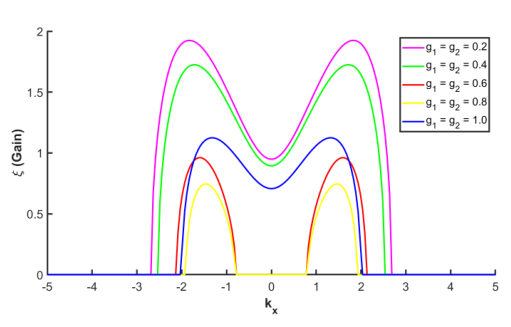
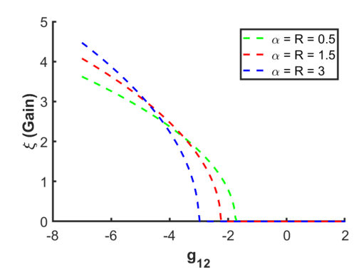
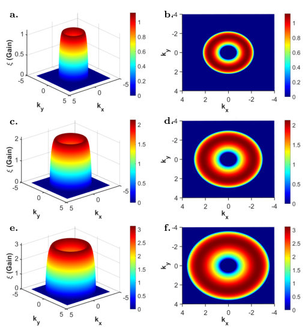
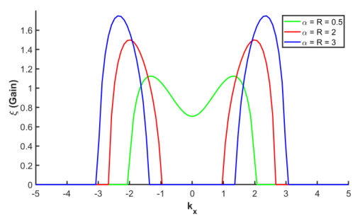
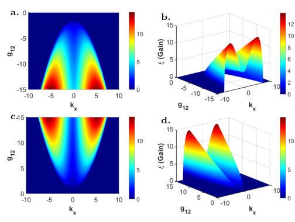
Summary. This paper explores the stability and dynamics of 2D Bose-Einstein condensates subject to helicoidal spin-orbit and Rabi coupling. It demonstrates how tuning atomic interactions and trap anisotropy can control modulation instability and the formation of complex spatial structures. The findings highlight the potential for engineering unique quantum phases through the interplay of spin-orbit coupling and external confinement.
Why it may be interesting. This work provides insights into the tunability of quantum phases and pattern formation in SOC-driven condensates, which is highly relevant for controlling many-body dynamics and creating unique topological or localized structures in ultracold atoms.
Main problem. Investigating how helicoidal spin-orbit coupling (SOC) and Rabi coupling influence the stability, modulation instability (MI), and structural dynamics of 2D two-component Bose-Einstein condensates.
Main result. The study finds that MI is driven by the competition between attractive and repulsive mean-field interactions, where increasing inter-species interaction expands instability bandwidth, while intra-species repulsion acts as a stabilizer. Additionally, the trap geometry and the sign of Rabi coupling significantly shape the momentum-space structures and spatial density profiles.
Method. The authors use a linear stability analysis of the coupled Gross-Pita_skii equations to derive dispersion relations and the split-step Fourier method for numerical simulations of nonlinear evolution.
Model / system. A two-component (two-pseudospin) Bose-Einstein Condensate confined in a 2D harmonic potential, modeled using a coupled Gross-Pitaevskii framework including helicoidal SOC, Rabi coupling, and intra- and inter-species s-wave interactions.
Key observables. Modulation instability (MI) gain, instability bandwidth in momentum space, spatial density distributions, and phase distributions (including vortex-like defects).
Important parameters / regimes. Helicoidal SOC strength (alpha), Rabi coupling strength (R), intra-species (g1, g2) and inter-species (g12) interaction strengths, and trap frequency (omega).
Assumptions / limitations. The study assumes a two-component BEC with components equally distributed between pseudospin states and focuses on 2D harmonic confinement.
Figures summary. Plots of MI gain versus interaction strengths and wavenumbers; 3D surface and 2D contour plots of the instability landscape in momentum space; and spatial density and phase distribution profiles in isotropic and anisotropic traps.
Paper structure. The paper defines the theoretical model and Hamiltonian, derives dispersion relations via linear stability analysis, discusses the effects of various couplings and interactions, and concludes with numerical simulations of nonlinear evolution and trap configurations.
This study explores the dynamics of Bose-Einstein condensates (BECs) with helicoidal spin-orbit coupling (SOC) and Rabi coupling, confined under a two-dimensional harmonic potential. The relationship between helicoidal SOC, non-linear interactions along with Rabi coupling and their impact on the stability and non linear trapped modes of the condensate is analyzed using a coupled Gross-Pitaevski (GP) framework. A linearized GP equation is used to investigate modulation instability (MI), demonstrating the impact of strong coupling effects and anisotropic confinement on the instability dynamics. It has been shown that the modulation instability in the condensate is predominantly governed by the competition between the attractive and repulsive mean-field interactions. Additionally, stability regimes are altered by the harmonic confinement, enhancing their susceptibility to SOC-induced asymmetry and intra- and intercomponent interactions. These results shed light on the possibility for unique quantum phases and emergent characteristics of helicoidal SOC-driven condensates.
Authors: Ranjani Seshadri
Type: theory · Category: other · PDF: https://arxiv.org/pdf/2605.26227v1
Analysis basis: full PDF text, analyzed in chunks
Topic relevance: non-equilibrium dynamics 3/5 · Keldysh / 2PI / non-Gaussian methods 2/5 · driven-dissipative phase transition 2/5
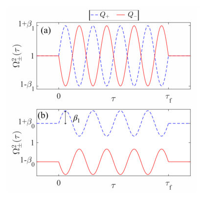
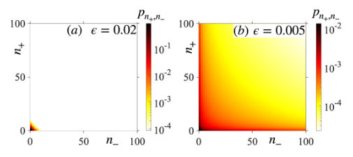
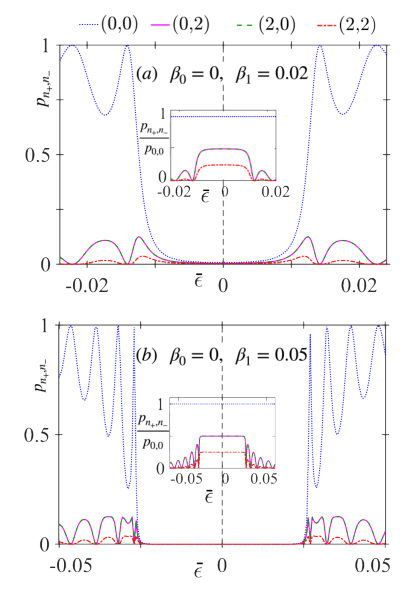
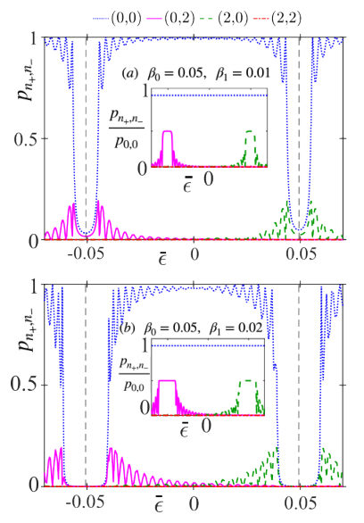
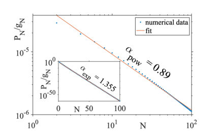
Summary. The paper shows that modulating the coupling between quantum oscillators allows for the selective excitation of specific normal modes. This method enables a 'mode-selective' approach to energy pumping that is not possible with standard frequency modulation. The findings have implications for controlling energy distribution in many-body quantum systems.
Why it may be interesting. This work is highly relevant for quantum optics and AMO physics as it provides a mechanism for precise control over individual modes in coupled systems, which is critical for tasks in optomechanics, superconducting circuits, and trapped ion arrays.
Main problem. Investigating how to achieve mode-selective excitation in coupled quantum harmonic oscillators by modulating the inter-oscillator coupling rather than the natural frequency.
Main result. The study demonstrates that by tuning the drive frequency, one can selectively excite a specific normal mode while leaving others in the ground state, provided the resonance windows do not overlap.
Method. The authors solve the Time-Dependent Schrodinger Equation using a Gaussian ansatz, which allows for an exact numerical treatment of the quadratic Hamiltonian.
Model / system. A system of two (or N) coupled quantum harmonic oscillators where the coupling strength is parametrically modulated at approximately twice the natural frequency.
Key observables. Energy expectation value, probability distribution of energy eigenstates, marginal probabilities of individual modes, and the decay pattern (power-law vs. exponential) of occupation numbers.
Important parameters / regimes. Static coupling (beta_0), modulation amplitude (beta_1), detuning (epsilon), and the number of drive cycles (nu).
Assumptions / limitations. The drive is assumed to turn on and off instantaneously (sudden switching approximation), and the system is treated as closed (no dissipation).
Figures summary. Figure 1 shows the time dependence of normal mode frequencies for degenerate and non-degenerate cases; Figure 6 shows marginal probabilities demonstrating mode selectivity; Figure 7 shows energy absorption peaks and exponential energy growth.
Paper structure. The paper introduces the problem of parametric driving, defines the Hamiltonian and modulation protocol, presents the Gaussian ansatz method, analyzes the two-oscillator case (degenerate vs. non-degenerate), discusses the statistical distribution of excitations, generalizes the results to N oscillators, and concludes with potential applications and future work.
A parametrically driven classical harmonic oscillator exhibits resonant instability when driven at twice its natural frequency, with the lowest energy configuration remaining unaffected by the drive. In contrast, the ground state of the quantum mechanical counterpart shows a non-trivial response to such a drive due to the spatial delocalization of the wavefunction. The standard realization of PR involves modulating the natural frequency of the oscillator. Here we study a different drive protocol in which the coupling between two such quantum harmonic oscillators is modulated parametrically. We show that the drive frequency can in principle be tuned to selectively excite any desired normal mode, while leaving the other close to its ground state. Only states with even quantum numbers in each normal mode are populated. Within the parametric resonance window the excitations follow a power-law decay with respect to occupation number, in contrast to the exponential decay observed off-resonance. We also briefly discuss how this framework can be extended to a system of N coupled oscillators
Authors: Daisuke Suzuki, Tomohiro Sasamoto
Type: theory · Category: statistical mechanics · PDF: https://arxiv.org/pdf/2605.27275v1
Analysis basis: full PDF text, analyzed in chunks
Topic relevance: non-equilibrium dynamics 3/5 · methods for driven-dissipative 2/5 · non-equilibrium universality 2/5
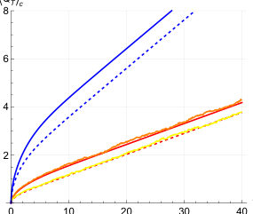
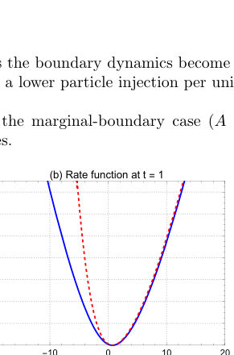
Summary. This paper extends the Macroscopic Fluctuation Theory framework to describe how current fluctuations evolve during the relaxation of a system toward a steady state. It provides exact analytical results for the current variance and generating functions, highlighting how initial conditions (quenched vs. annealed) and boundary dynamics influence the approach to equilibrium.
Why it may be interesting. not directly relevant
Main problem. Extending Macroscopic Fluctuation Theory (MFT) from analyzing non-equilibrium steady states to analyzing non-stationary, time-dependent processes in 1D boundary-driven diffusive systems.
Main result. The authors derive the current variance and the Scaled Cumulant Generating Function (SCGF) for non-stationary processes, demonstrating a crossover in current fluctuations from O(sqrt(T)) to O(T) and proving that quenched initial conditions yield lower variance than annealed ones.
Method. The study utilizes Macroscopic Fluctuation Theory (MFT) combined with the Martin-Siggia-Rose (MSR) formalism, saddle-point analysis, and Green's function methods to solve the resulting non-linear partial differential equations.
Model / system. 1D boundary-driven diffusive systems (such as the Symmetric Simple Exclusion Process and Reflective Brownian Motion) of length L, coupled to particle reservoirs at both ends with specific densities and boundary coupling strengths.
Key observables. Integrated current (Q_T), Scaled Cumulant Generating Function (SCGF), current variance, and the Large Deviation Function (LDF).
Important parameters / regimes. System length (L), time (T), diffusion coefficient (D), mobility (sigma), reservoir densities (rho_L, rho_R), and boundary coupling strengths (A, B).
Assumptions / limitations. The use of the diffusive scaling limit, the local equilibrium approximation, and the gradient condition for transport coefficients.
Figures summary. Figure 1 shows the time evolution of expected integrated current illustrating the crossover from sqrt(T) to linear growth; Figure 5 shows the LDF for annealed conditions; Figure 6 compares LDFs for annealed vs. quenched conditions across different temporal scales.
Paper structure. The paper introduces the problem of non-stationary MFT, develops the mathematical framework for the MFT action and boundary conditions, provides analytical derivations for current statistics in specific models (SEP, RBM), compares annealed and quenched initial conditions, and verifies the large-system and steady-state limits.
While Macroscopic Fluctuation Theory (MFT) has been highly successful in analyzing non-equilibrium steady states, its application to non-steady-state processes remains limited. In this study, we apply MFT to the relaxation process of one-dimensional boundary-driven diffusive systems coupled to particle reservoirs at both ends. We exactly derive the current variance for systems with a constant diffusion coefficient and arbitrary mobility, as well as the cumulant generating function for the current in Reflective Brownian Motion (RBM). Our results demonstrate that non-steady current fluctuations during the approach to a steady state can be quantitatively described within the MFT framework.
Authors: Molly Message, Bianca C. J. Uy, Katie O'Flynn, Yugang Ren, Muddassar Rashid, Jonathan D. Pritchett, Qiongyuan Wu, Hyukjoon Kwon, Benjamin A. Stickler, James Millen
Type: experiment · Category: statistical mechanics · PDF: https://arxiv.org/pdf/2605.27118v1
Analysis basis: full PDF text, analyzed in chunks
Topic relevance: non-equilibrium dynamics 3/5 · quantum measurements 3/5
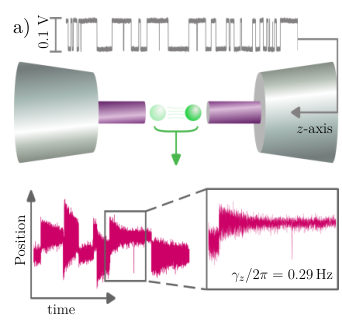
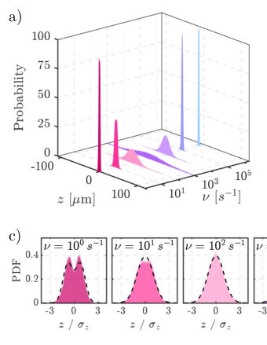
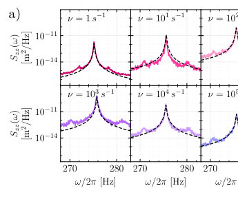
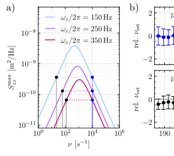
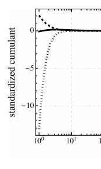
Summary. The paper presents a method to use a levitated microparticle as a spectrometer to detect and measure Random Telegraph Noise. By tuning the particle's oscillation frequency, the researchers observed a massive resonance in fluctuations, allowing them to characterize noise switching rates across six orders of magnitude. This technique provides a unique way to study non-equilibrium stochastic dynamics in the presence of realistic, non-white noise.
Why it may be interesting. This work is highly relevant to open quantum systems and non-equilibrium dynamics as it demonstrates a platform for studying how non-white, non-Gaussian noise drives a mechanical oscillator, providing a new tool for probing stochastic processes.
Main problem. Developing a method to sense and characterize the spectral properties of Random Telegraph Noise (RTN) across a wide frequency range using a levitated sensor.
Main result. The researchers discovered a resonance-like behavior where position fluctuations increase by three orders of magnitude when the RTN switching rate approaches the particle's oscillation frequency, enabling a spectrometer-like measurement over six decades of timescale.
Method. High-resolution particle tracking using an event-based camera (EBC) combined with a frequency-ramping protocol where the trap's oscillation frequency is swept to resolve RTN rates and distinguish true solutions from artifacts.
Model / system. A single charged silica microsphere levitated in a linear Paul trap in the underdamped regime, driven by both thermal white noise and a synthetic two-level Random Telegraph Noise source.
Key observables. Particle position (zt), position variance (sigma_z^2), Power Spectral Density (PSD), and position probability density functions (PDFs).
Important parameters / regimes. Switching rate (nu), oscillation frequency (omega_z), damping rate (gamma_z), and the RTN-to-white-noise energy ratio.
Assumptions / limitations. The system is in the long-time limit (t >> 1/gamma_z) and uses a first-order approximation for the exponential in the waiting time distribution.
Figures summary. Figure 1 shows the experimental setup and particle trajectories at different switching rates; Figure 2 displays position PDFs and variance vs. switching rate; Figure 5 illustrates the mathematical connection between jumps and the Poisson process; Figure 6 shows computed cumulants; Figure 7 shows the probability distribution of the maximum PSD and the required frequency ramping range.
Paper structure. The paper introduces the problem of RTN characterization, describes the experimental Paul trap platform and noise synthesis, presents the analytical model for particle dynamics, details the sensing protocol and resonance discovery, and concludes with error analysis and precision limits.
Random Telegraph Noise is a ubiquitous process manifesting across technology and the natural world. It is characterized by random jumps between two distinct states with Poissonian waiting times, and is the origin of 1/f noise. Understanding and characterizing this noise is critical for the reliable operation of micro-, nano- and quantum-technologies. In this work we probe random telegraph noise using a levitated microparticle sensor whose dynamics are driven almost entirely by this non-white source of noise. We observe a startling resonant behaviour, characterized by a thousand-fold increase in the underdamped sensor's position fluctuations, enabling us to measure the spectral properties of the noise over six decades of timescale. This work not only provides a unique way to probe random telegraph noise, but also demonstrates a platform for studying non-equilibrium stochastic dynamics in the presence of realistic non-white noise, with applications from biology to social behaviour.
Authors: Diego S. Starke, Jonas Maziero, Marcos L. W. Basso, Tabish Qureshi
Type: theory · Category: quantum information and computing · PDF: https://arxiv.org/pdf/2605.26375v1
Analysis basis: full PDF text, analyzed in chunks
Topic relevance: entanglement & information structure 3/5 · quantum measurements 3/5
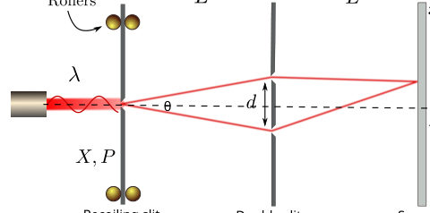
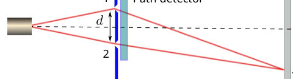
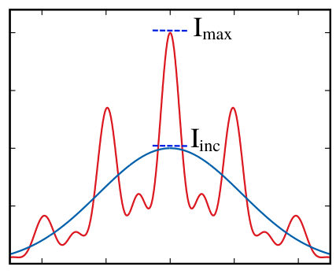
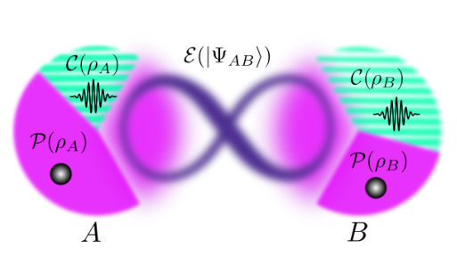
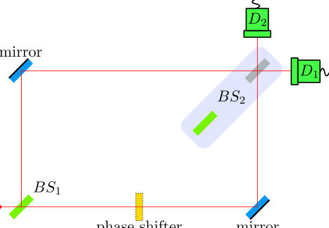
Summary. This review provides a comprehensive overview of Bohr's Complementarity Principle, tracing its journey from a qualitative concept to a quantitative tool in quantum information science. It reconciles historical debates regarding the mechanism of decoherence and establishes how complementarity relations emerge from the mathematical structure of quantum states.
Why it may be interesting. It provides a unified mathematical framework linking fundamental quantum principles like uncertainty and contextuality to modern quantum information resources like entanglement and coherence, which is highly relevant to quantum optics and open quantum systems.
Main problem. The review aims to trace the evolution of Bohr's Complementarity Principle from a qualitative historical concept to a modern quantitative framework, specifically addressing the mechanism of interference destruction in which-way experiments.
Main result. The authors demonstrate that the 'momentum kick' and 'entanglement' views of complementarity are mathematically equivalent and show that duality relations can be systematically derived from the properties of the density operator.
Method. The paper employs information-theoretic approaches, resource theories (of coherence and purity), and mathematical analysis of density operator properties, including trace operations and Helstrom bounds for state discrimination.
Model / system. The review covers various interferometric setups, primarily the two-slit and multi-slit models, including Einstein's recoiling slit gedankenexperiment and modern realizations in photons, atoms, and NMR.
Key observables. Interferometric visibility, path predictability, distinguishability, quantum coherence (including l1-coherence), and entanglement.
Important parameters / regimes. The trade-off between which-path information and interference visibility, specifically the quadratic Englert relation (D^2 + V^2 <= 1) and the linear UQSD-based relation (D_Q + V <= 1).
Assumptions / limitations. The review focuses on physical and operational developments rather than exhaustive philosophical analysis; it assumes the use of density operators to represent quantum states and explores the limits of non-orthogonal state discrimination.
Figures summary. Figure 1 shows a schematic of Einstein's recoiling slit experiment illustrating momentum transfer; Figure 2 shows a standard two-slit setup with a path detector.
Paper structure. The paper begins with the historical evolution of complementarity, moves to the quantitative formulation via duality and triality relations, discusses the resolution of the recoil vs. entanglement debate, and extends the scope to multi-slit interference and resource-theoretic frameworks.
Quantum complementarity is a fundamental feature of quantum systems and has captivated the physics research community for nearly a century, with significant advancements emerging in recent decades. This review traces the historical evolution of the concept of complementarity, beginning with Bohr's original formulation. It then explores its modern quantification through complementarity relations and its profound connection to the foundational postulates of quantum theory. Furthermore, it delves into key related developments, such as the operational definition of complementarity in the context of incompatible observables, its potential links with quantum uncertainty relations and contextuality, its various applications, and other pertinent topics. This review aims to serve physicists interested in quantum resources, quantum correlations, and the foundational principles of quantum mechanics.
Authors: Maxime Burgher, Simon Loddo, Laurens Vanderstraeten, Nathan Goldman, Ivan Amelio
Type: theory · Category: quantum gases · PDF: https://arxiv.org/pdf/2605.26231v1
Analysis basis: full PDF text, analyzed in chunks
Topic relevance: Keldysh / 2PI / non-Gaussian methods 3/5 · analog quantum simulation 3/5
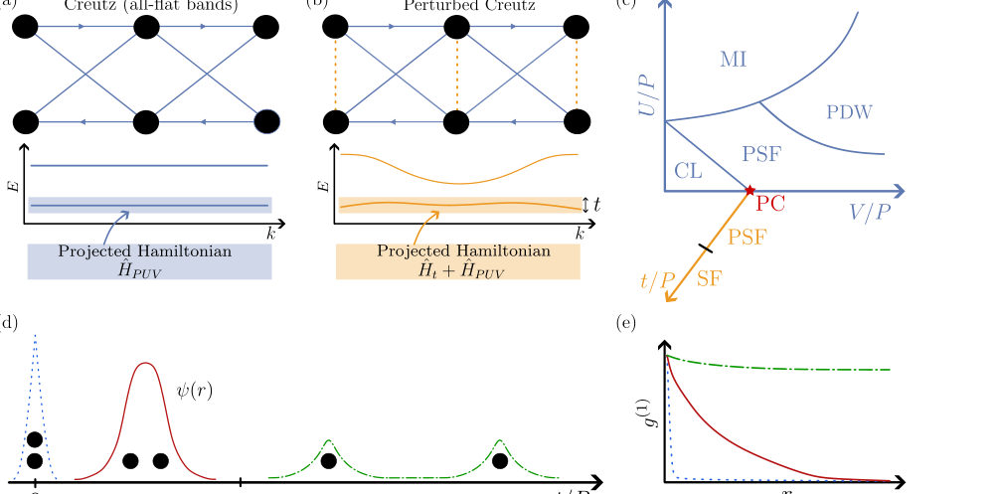
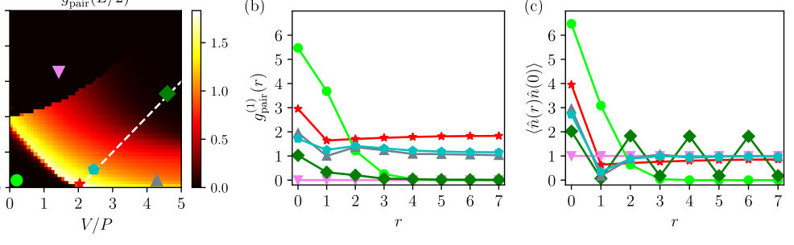
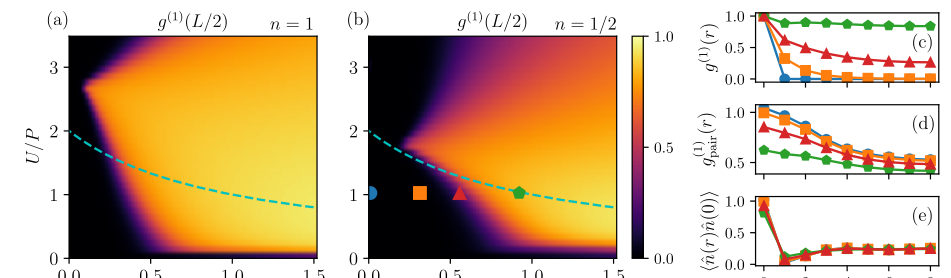
Summary. This paper explores how bosons in nearly flat energy bands compete between forming pairs or single-particle condensates. By using a Gaussian variational method, the authors show that pair superfluidity can persist even when single-particle hopping is introduced. The work also establishes a new connection between the speed of sound and the underlying quantum geometry of the bands.
Why it may be interesting. It provides a powerful new analytical tool (the Gaussian approach) for studying exotic many-body phases in flat-band systems, which are highly relevant to the physics of ultracold atoms in optical lattices and topological insulators.
Main problem. Investigating the competition between pair superfluidity (PSF) and single-particle superfluidity (SF) in bosonic quasi-flat bands and understanding how single-particle hopping drives the transition between these phases.
Main result. The authors find that the PSF phase remains stable for a finite range of hopping strength before transitioning to an SF phase, and they derive a new relation between the speed of sound and a quantum geometric kernel.
Method. A variational Gaussian state approach is used to provide a unified description of both phases, supplemented by Exact Diagonalization and two-body problem analysis.
Model / system. A one-dimensional, multi-orbital, quasi-flat-band bosonic model (the tJPUV model) that includes single-particle hopping, pair hopping, and various interaction terms.
Key observables. Single-particle and pair coherence functions, speed of sound, collective excitation spectrum, dynamic structure factor, and density-density correlations.
Important parameters / regimes. Hopping strength (t), pair hopping (P), interaction strengths (U, V), correlated hopping (J), and particle density (n).
Assumptions / limitations. The Gaussian approach is a variational approximation that may deviate from exact results at specific points like the pair condensate point.
Figures summary. Figure 2 shows the phase diagram as a function of interaction strengths; Figure 4 shows density and condensate order parameter; Figure 5 compares the dynamic structure factor across different regimes; Figure 6 illustrates the impact of correlated hopping on coherence.
Paper structure. The paper introduces the quasi-flat-band model, develops the variational Gaussian state framework, analyzes the phase diagram and transitions using ED and two-body physics, and concludes with a comparison of excitation spectra and sound velocity.
The interplay between interactions and quantum geometry can drive weakly dispersive bosons into different exotic many-body phases. In this work we study a quasi flat-band model in one dimension that exhibits an extended pair-superfluid phase in the all-flat-band limit. Introducing single-particle hopping leads to an intriguing competition with a more conventional single-particle superfluid: we find that the pair superfluid remains stable for a finite range of the hopping strength until the system eventually transitions into the conventional superfluid phase. In our study, we make use of a variational Gaussian state approach that provides a unified description of the single-particle and pair superfluid phases, regarding both the ground state wavefunction and the collective excitation spectrum. In particular, we derive a general relation between the speed of sound and a ``quantum geometric kernel'', thereby extending earlier connections to the quantum metric, which relied on single-particle mean-field theory. This approach is combined with insights from the two-boson problem and exact diagonalization to map out the full phase diagram of the model. Our results show that the Gaussian approach is a versatile tool for studying a broad range of superfluid phases of interacting bosons in multi-orbital lattices.
Authors: Huaiyu Zhu, Ju Liu, Tao Zhang, Qin Luo, Zhongkun Hu, Minkang Zhou
Type: experiment · Category: other · PDF: https://arxiv.org/pdf/2605.26860v1
Analysis basis: full PDF text, analyzed in chunks
Topic relevance: quantum measurements 3/5 · quantum optics experiment 2/5

Summary. This paper demonstrates a high-contrast Bragg atom interferometer that achieves 99% fringe contrast. By accounting for experimental systematic errors through Monte Carlo simulations, the authors established a new, more stringent upper limit on the Continuous Spontaneous Localization collapse rate.
Why it may be interesting. This work provides a high-precision experimental test of fundamental decoherence models (CSL) using AMO platforms, demonstrating how controlling systematic noise in atom interferometry can push the boundaries of testing the foundations of quantum mechanics.
Main problem. Testing the Continuous Spontaneous Localization (CSL) model to address the wave function collapse problem by establishing more stringent upper bounds on the CSL collapse rate.
Main result. Achieved a high-contrast Bragg atom interferometer (99% contrast) and established a new upper limit for the CSL collapse rate of lambda_CSL = 1.27e-5 s^-1 at r_C = 10^-5 m, a 4-fold improvement over previous atom-interferometric constraints.
Method. The researchers used a Mach-Zehnder type Bragg atom interferometer with 87Rb atoms and employed Monte Carlo simulations to systematically identify and correct for experimental systematic effects like misalignment and diffusion.
Model / system. A Bragg atom interferometer using ultracold 87Rb atoms prepared in the |F=2, m_F=0> state, utilizing a Mach-Zehnder sequence of pi/2-pi-pi/2 Bragg pulses.
Key observables. Interference fringe contrast (C) and accumulated phase difference (delta_phi).
Important parameters / regimes. Interrogation time T up to 60 ms, CSL collapse rate lambda_CSL, CSL correlation length r_C = 10^-5 m, and atomic temperature of ~0.85 uK.
Assumptions / limitations. The CSL model is modeled as inducing phase noise leading to exponential decay of contrast; a two-level system approximation is used for the Bragg pulses.
Figures summary. Fig 1a shows a space-time diagram of the interferometer; Fig 5 provides a flowchart of the Monte Carlo simulation process.
Paper structure. The paper introduces the CSL problem, describes the experimental setup and atom preparation, details the method for systematic error correction via Monte Carlo simulation, presents the resulting CSL bounds, and discusses future directions.
The continuous spontaneous localization (CSL) model is one of the most promising approaches to address the wave function collapse problem in the measurement process of standard quantum mechanics. In this work, the effect of the CSL model on a Bragg atom interferometer was investigated. A Bragg interferometer achieving high fringe contrast of 99$\%$ has been demonstrated, maintaining this performance level at interrogation time up to $T=60~\mathrm{ms}$. The primary factors responsible for fringe contrast loss in the atom interferometer were systematically analyzed and corrected. This improvement established a new upper limit of $λ_{\rm CSL}=1.27\times10^{-5}~\mathrm{s}^{-1}$ at $r_C=10^{-5}~\mathrm{m}$ for the CSL collapse rate, representing approximately 4 times enhancement over previous atom-interferometric constraints.
Authors: Ch Nihar Kartikeya, Anjana K, Bijita Sarma, Sangkha Borah
Type: theory · Category: numerical methods · PDF: https://arxiv.org/pdf/2605.27285v1
Analysis basis: full PDF text, analyzed in chunks
Topic relevance: entanglement & information structure 3/5 · non-equilibrium dynamics 2/5
Summary. This paper presents BASS, a new algorithm for simulating quantum circuits that avoids the fidelity collapse seen in fixed-basis sparse simulators. By adaptively rotating qubits into a basis that concentrates wavefunction weight, it achieves much higher accuracy for a fixed memory budget. This allows for the simulation of larger and more entangled circuits than previously possible with standard sparse methods.
Why it may be interesting. It introduces a novel way to extend the reach of classical simulations of many-body dynamics by using adaptive basis selection, which is highly relevant for researchers studying the limits of entanglement growth and the complexity of quantum dynamics.
Main problem. Classical simulation of quantum circuits using sparse-state methods suffers from rapid fidelity loss when entanglement or basis rotations spread wavefunction weight across the computational basis.
Main result. The BASS algorithm achieves significantly higher fidelity than fixed-basis simulators in the memory-limited regime by dynamically rotating qubits into the eigenbasis of their single-quim RDM, providing up to an order of magnitude improvement in state overlap.
Method. The BASS (Basis-Adaptive Sparse-State Simulation) algorithm updates each qubit's local representation basis during execution by rotating it into the eigenbasis of its single-qubit reduced density matrix, inspired by natural-orbital ideas in quantum chemistry.
Model / system. The study focuses on gate-model quantum circuits, including structured brickwork circuits, Haar-random circuits, QAOA, UCCSD, and disordered Ising circuits.
Key observables. Fidelity (F), Participation Ratio (PR), Z-basis Participation Ratio (PR_Z), Retained Probability (p_S), and the ratio k/PR_Z.
Important parameters / regimes. Sparse budget (k), circuit depth (L), number of qubits (N), and the optimization interval (n_opt).
Assumptions / limitations. The effectiveness of the fidelity lower bound is most reliable in the probability-limited regime where k << PR_Z; the method assumes the single-qubit RDM eigenbasis is a good proxy for the optimal basis.
Figures summary. Figure 1 shows a schematic of the BASS workflow comparing delocalized states in the Z-basis to concentrated states in the rotated basis. Other figures illustrate the scaling of fidelity improvement and the trade-off between runtime overhead and accuracy.
Paper structure. The paper introduces the BASS algorithm, provides theoretical proofs for top-k optimality and RDM eigenbasis stationarity, presents numerical benchmarks across various circuit families (Brickwork, Haar, QAOA, etc.), and discusses hyperparameter robustness and fidelity estimation.
Classical simulation of many-body quantum systems remains economical only when wavefunction amplitudes stay localized in the working basis. Fixed-basis sparse-state simulators scale memory as $\mathcal{O}(k)$ by keeping the largest computational-basis amplitudes; however, fidelity drops once entanglement or basis rotations spread weight across the Hilbert space. In this work, we introduce an algorithm called Basis-Adaptive Sparse-State Simulation (BASS), which updates each qubit's local representation basis during execution rather than locking the computational basis for the entire circuit. Before truncation, each qubit is rotated into the eigenbasis of its single-qubit reduced density matrix, following the natural-orbital idea from quantum chemistry, so the retained amplitudes stay clustered. We prove that top-$k$ selection is uniquely optimal for one-step truncation in any fixed basis and that the one-body reduced-density-matrix eigenbasis is a stationary product basis for the inverse participation ratio (PR), with a residual bounded by local entanglement coherence. We perform a systematic benchmarking over a variety of quantum circuits and demonstrate that the ratio \(k/\text{PR}_Z\) (sparse budget over computational participation ratio) serves as an indicator for regimes in which adaptive measurement bases provide a performance advantage. On structured brickwork circuits, BASS achieves substantially higher fidelity than the fixed-basis approach, while incurring only a moderate increase in wall-clock time in the memory-limited regime. Moreover, for disordered Ising circuits, BASS systematically provides an improvement of approximately one order of magnitude in state overlap at a fixed computational budget.
Authors: Francesco Scardino, Martina Giachello, Giacomo Gradenigo
Type: theory · Category: numerical methods · PDF: https://arxiv.org/pdf/2605.26892v1
Analysis basis: full PDF text, analyzed in chunks
Topic relevance: Keldysh / 2PI / non-Gaussian methods 3/5 · non-equilibrium dynamics 2/5
Summary. This paper extends a symplectic quantization method to relativistic quantum field theory, demonstrating that quantum fluctuations can be sampled via a deterministic Hamiltonian flow in an auxiliary time. The authors prove that this approach recovers standard Feynman physics in the continuum limit and provide numerical evidence using a 1+1D scalar field.
Why it may be interesting. It presents a deterministic, alternative formulation of QFT that avoids the sign problem of standard path integrals by using an auxiliary time, which could be relevant for developing new classical simulation techniques for quantum dynamics.
Main problem. Extending the Constrained Symplectic Quantization (CSQ) framework from quantum mechanics to relativistic quantum field theory in Minkowski space-time and proving its equivalence to the Feynman path integral.
Main result. The authors prove that the CSQ microcanonical generating functional converges to the Feynman generating functional in the continuum limit and numerically validate this using a 1+1D free scalar field simulation.
Method. The method involves complexifying the field phase space, imposing constraints to ensure stable intrinsic-time evolution, and using a symplectic integrator on a lattice to compute real-time correlators.
Model / system. A real, massive, Lorentz-invariant scalar field in 1+1 dimensional Minkowski space-time, modeled on a discretized hypercubic lattice.
Key observables. Real-time two-point correlation functions, equal-time commutator relations, Dyson-Schwinger equations, and the light-cone profile of a localized initial pulse.
Important parameters / regimes. Intrinsic time (tau), physical Minkowski time, mass (m), lattice spacing (a), number of degrees of freedom (M), and the action scale (A = h-bar * M).
Assumptions / limitations. Relies on a weak ergodicity assumption to equate time-averages with ensemble averages; the numerical validation is currently limited to the free field case.
Figures summary. Figure 1 shows integration contours in the complex field plane; Figure 10 is a heatmap of the field correlator propagation; Figure 11 shows the collapsed lattice data matching the continuum Bessel function prediction.
Paper structure. The paper introduces the CSQ framework, provides a formal proof of equivalence to the Feynman path integral in the continuum limit, details the construction of stable manifolds via complex contour deformation, and concludes with a numerical lattice implementation and validation using a 1+1D scalar field.
Constrained symplectic quantization is a functional formulation of quantum field theory in which quantum fluctuations are sampled through a deterministic Hamiltonian flow in an auxiliary intrinsic time $τ$. In this paper we extend the quantum-mechanical framework introduced in [1] to a relativistic scalar quantum field theory in Minkowski space-time. The construction is based on the analytic continuation of fields and action from $\mathbb{R}$ to $\mathbb{C}$ together with constraints that select stable intrinsic-time trajectories and, at the same time, define convergent integration cycles for the corresponding microcanonical functional. We show that, in the continuum limit, the microcanonical generating functional reproduces the Feynman generating functional. For the free scalar field in $1+1$ dimensions we derive the constrained equations of motion, implement the resulting dynamics numerically, and verify real-time two-point correlators, equal-time commutator relations, and Dyson--Schwinger equations including the expected contact terms.
Authors: Dorian Schiffer, Marcus Huber, Elizabeth Agudelo
Type: theory · Category: quantum information and computing · PDF: https://arxiv.org/pdf/2605.26962v1
Analysis basis: full PDF text, analyzed in chunks
Topic relevance: entanglement & information structure 3/5 · quantum measurements 2/5
Summary. This paper introduces a way to detect a specific type of entanglement that links photon number and polarization, which standard methods miss. By providing a new mathematical witness, the authors show how to certify quantum correlations that exist between continuous and discrete variables. This work lays the groundwork for a unified theory of entanglement in complex optical states.
Why it may be interesting. It provides a new framework for characterizing entanglement in high-dimensional, multi-degree-of-freedom systems, which is crucial for advancing quantum optics and hybrid quantum networks.
Main problem. The paper addresses the failure of existing entanglement witnesses to detect genuine hybrid entanglement between continuous-variable (photon number) and discrete-variable (polarization) degrees of freedom in macroscopic Bell states.
Main result. The authors derive an operational fidelity-based witness that provides a sufficient criterion for certifying genuine hybrid number-polarization entanglement, transcending the traditional CV-DV dichotomy.
Method. The authors use a number-basis representation of Two-Mode Squeezed Vacuum states and derive bounds for the overlap of states in the convex hull of number-separable and polarization-separable sets using Cauchy-Schwarz inequalities and optimization.
Model / system. The system consists of Macroscopic Bell States (MBS) generated via Spontaneous Paramcepted Down-Conversion (SPDC) in non-linear crystals using a strong coherent pump, modeled in a four-mode Fock space.
Key observables. Stokes operators (Sx, Sy, Sz), photon number (N), fidelity (F), and squeezing parameter (r).
Important parameters / regimes. Squeezing parameter (r), specifically looking at regimes including r > 1.15; fidelity threshold (F) for witness violation.
Assumptions / limitations. The distinction between CV and DV entanglement is treated as a conceptual categorization; the analysis assumes the ability to perform photon-number-conditioned density matrix reconstruction.
Figures summary. Figure 1 illustrates the geometry of the state space and the witness as a supporting hyperplane; Figure 2 shows the witness bound evaluated in the non-vacuum subsector compared to experimental feasibility.
Paper structure. The paper begins by identifying the gap between CV and DV entanglement, introduces the model of Macroscopic Bell States, critiques existing Stokes-operator-based witnesses, derives a new fidelity-based witness and its bounds, and concludes with experimental implementation outlines and future generalizations.
Entanglement is a key resource for fundamental tests of physics and emerging quantum technologies. In quantum optics, two perspectives on entanglement coexist. In the continuous-variable framework, entanglement is understood as holding between optical modes. In contrast, discrete-variable quantum optics focuses on quantum correlations in degrees of freedom such as polarization that label fixed numbers of photons. In this paper, we show that entanglement can transcend this separation. Spontaneous parametric down-conversion inherently generates correlations in optical phase space, photon number, and labelling degrees of freedom simultaneously. In polarization, this structure is traditionally described by macroscopic Bell states. Existing witnesses, however, fail to detect the genuine hybrid entanglement of these states, which goes beyond the continuous-discrete-variable categorization. Here, we lay the groundwork for a general framework unifying continuous- and discrete-variable notions of entanglement. In particular, we derive an operational witness providing a sufficient criterion for genuine hybrid number-polarization entanglement and outline its experimental implementation. Finally, we discuss exemplary states which, together with our results on macroscopic Bell states, motivate a broader classification of genuine hybrid quantum correlations.
Authors: Alberto Cortijo
Type: theory · Category: strongly correlated electrons · PDF: https://arxiv.org/pdf/2605.26223v1
Analysis basis: full PDF text, analyzed in chunks
Topic relevance: Keldysh / 2PI / non-Gaussian methods 3/5 · non-equilibrium dynamics 2/5
Summary. This paper demonstrates that quantum interference in electron hydrodynamics is constrained by conservation laws to affect only the stress sector. This leads to a unique signature where quantum corrections actually reduce viscosity and resistivity, providing a clear experimental distinction from standard weak localization.
Why it may be interesting. not directly relevant
Main problem. Determining how quantum interference (the Cooperon effect) corrections enter the hydrodynamic regime of electron fluids and how they affect transport coefficients like viscosity.
Main result. The hydrodynamic Cooperon renormalizes the spin-two stress relaxation rate, leading to a reduction in effective viscosity and a decrease in viscous resistivity, which is the opposite sign of ordinary weak localization.
Method. The study uses a Schwinger-Keldysh effective theory, an angular-harmonic expansion of the kinetic equation, and a Bethe-Salpeter resummation to construct the hydrodynamic Cooperon.
Model / system. A two-dimensional electron fluid (including Fermi-liquid and Planckian/quantum-critical regimes) subject to a random-friction model representing weak momentum-relaxing disorder.
Key observables. Effective viscosity, viscous resistivity, channel conductivity, and stress relaxation rate.
Important parameters / regimes. Momentum-conserving collision time (tau_mc), momentum-relaxing time (tau_mr), dephasing time (tau_phi), and channel width (W).
Assumptions / limitations. The theory assumes an isotropic Fermi surface, a truncated Navier-Stokes hierarchy (neglecting higher-order Burnett terms), and a small-gradient expansion.
Figures summary. Figure 1 compares diffusive versus hydrodynamic interference; Figure 2 shows the Gurzhi response (resistance vs. temperature) in a narrow channel with varying levels of the Cooperon correction.
Paper structure. The paper begins by defining the hydrodynamic problem and Ward identities, moves to the construction of the hydrodynamic Cooperon via the kinetic hierarchy, calculates the self-energy of the stress sector, and concludes with the resulting temperature-dependent scaling for resistivity in different regimes.
We show that quantum-interference corrections in an electron fluid are tightly constrained by hydrodynamic Ward identities: charge and momentum conservation protect the $m=0,\pm1$ sectors, so the leading correction first appears in the spin-two $m=\pm2$ stress sector. The resulting hydrodynamic Cooperon has a robust infrared structure that renormalizes stress relaxation, and hence the viscosity. In channel flow this lowers the viscous resistivity, producing a hydrodynamic interference signature with the opposite sign to ordinary weak localization.
Authors: Xiaoran Liu, Michael Terilli, Ana-Marija Nedic, Jiandong Guo, Jak Chakhalian
Type: both · Category: strongly correlated electrons · PDF: https://arxiv.org/pdf/2605.26603v1
Analysis basis: full PDF text, analyzed in chunks
Topic relevance: non-equilibrium dynamics 3/5
Summary. This perspective reviews how epitaxial thin-film engineering allows for the precise manipulation of quantum states in pyrochlore iridates. By using strain and dimensionality, researchers can access exotic phases like magnetic Weyl semimetals and chiral spin liquids that are hidden in bulk crystals. This approach establishes a roadmap for designing novel quantum matter through heterostructure engineering.
Why it may be interesting. The discussion of Floquet engineering and light-induced transitions from Mott insulators to Weyl semimetals is highly relevant to many-body dynamics and non-equilibrium physics.
Main problem. How to move beyond bulk crystals to actively design and control emergent quantum phenomena, such as Weyl semimetals and chiral spin liquids, in 5d pyrochlore iridates.
Main result. Thin-film engineering via epitaxial strain, dimensional confinement, and interfacial coupling provides new tuning knobs to break symmetries and realize previously elusive topological and magnetic states.
Method. The paper reviews advancements in epitaxial thin-film synthesis (e.g., solid-phase epitaxy) and various experimental probes including magnetotransport, RIXS, and optical spectroscopy.
Model / system. 5d pyrochlore iridates (R2Ir2O7) characterized by the interplay of strong spin-orbit coupling, electron correlations, and geometric frustration in a corner-sharing tetrahedral lattice.
Key observables. Anomalous Hall effect (AHE), Topological Hall effect (THE), Planar Hall effect (PHE) harmonics, magnetoresistance, and magnetic multipole signatures.
Important parameters / regimes. Electron correlation (U), bandwidth (W), spin-orbit coupling (zeta), trigonal crystal field (delta_tri), epitaxial strain, and film thickness.
Assumptions / limitations. The review assumes the validity of the interplay between SOC and correlations as the primary driver of the observed phases; notes limitations in photoemission studies due to surface challenges.
Figures summary. Figure 1 shows a schematic of exotic phenomena from SOC/correlation/frustration synergy; Figure 2 illustrates the pyrochlore unit cell, trigonal distortion, and Ir 5d orbital splitting.
Paper structure. The paper introduces the fundamental physics of bulk iridates, transitions to the advantages of thin-film tuning knobs (strain, dimensionality, interface), discusses specific realized phases (Weyl semimetals, spin liquids), and concludes with future directions like Floquet engineering.
The pyrochlore iridates R2Ir2O7 have emerged as a unique playground for exploring exotic quantum phenomena arising from the intricate interplay of strong spin-orbit coupling, electron correlations, and geometric frustration. While bulk crystals of these materials have revealed a rich landscape of correlated and topological states, recent breakthroughs in epitaxial thin-film synthesis and heterostructure engineering unlocked an entirely new dimension of discovery. This brief Perspective reviews recent advancements highlighting how new tuning knobs such as dimensional confinement, epitaxial strain, and interfacial coupling can be used to manipulate the delicate balance of competing interactions. We discuss several key discoveries enabled by this approach including the realization of the magnetic Weyl semimetal phase in (111) oriented films, strain-engineered magnetic multipolar orders, the emergence of a chiral spin liquid-like state in the quasi-2D limit, and the discovery of novel electronically anisotropic states at interfaces between pyrochlore iridates and other quantum materials, such as spin ice pyrochlores. These findings showcase that low-dimensional pyrochlore iridates provide ample opportunities for both theory and experiment to unravel, control and ultimately design novel quantum states of matter. We conclude by outlining key open questions and future directions ranging from the synthesis of new heterostructures to the application of advanced probes and the exploration of non-equilibrium phenomena.
Authors: Gabriele Costa, Matteo Ciardi, Fabio Cinti, Santi Prestipino
Type: theory · Category: quantum gases · PDF: https://arxiv.org/pdf/2605.26303v1
Analysis basis: full PDF text, analyzed in chunks
Topic relevance: analog quantum simulation 3/5
Summary. This paper examines the superfluid-insulator transition in small-scale lattice geometries and continuous-space bosonic systems. It demonstrates that while small grids show unique features compared to infinite lattices, the fundamental physics of the Bose-Hubbard model is already visible in systems with very few particles.
Why it may be interesting. It provides crucial insights into how many-body phenomena like superfluidity and insulating phases emerge in small-scale quantum systems, which is highly relevant for the development of quantum simulators and trapped atom experiments.
Main problem. Investigating the remnants of the superfluid-insulator transition in truncated, small-scale 2D lattices and exploring how these discrete models relate to continuous-space bosonic systems.
Main result. The study finds that small grids exhibit ground-state characteristics markedly different from the thermodynamic limit, while continuous-space simulations of just five particles show clear hints of Bose-Hubbard behavior.
Method. The authors use Exact Diagonalization (ED) to map phase diagrams of small grids and Path-Integral Monte Carlo (PIMC) with the Worm algorithm to study continuous-space systems.
Model / system. The study focuses on the hard-core extended Bose-Hubbard model on small square, diamond, and star-shaped grids, as well as continuous-space spinless bosons with inverse-power repulsion under confinement.
Key observables. Condensate fraction, superfluid fraction, energy gap, average site occupancy, kinetic and potential energies, and exchange-cycle statistics.
Important parameters / regimes. Hopping amplitude (t), nearest-neighbor repulsion (V), chemical potential (mu), on-site interaction (U), and optical lattice potential strength (V0).
Assumptions / limitations. The primary model is analyzed in the hard-core limit (infinite on-site repulsion), and mean-field theory is used as a reference for the thermodynamic limit.
Figures summary. Figure 1 shows the grid geometries; Figure 2 details the square grid phase diagram and energy gap; Figure 12-15 show site occupancies, exchange-cycle distributions, and density maps for continuous systems.
Paper structure. The paper introduces the problem of finite-size effects, presents ED results for various small lattice geometries (square, diamond, star), compares these to mean-field predictions, and then extends the study to continuous-space simulations using PIMC.
The superfluid-insulator transition in systems of lattice bosons is usually analyzed in the framework of the Bose-Hubbard model, and has been extensively studied by theory and simulations. Less attention has been paid to the remnants of the transition in truncated lattices, with or without periodic boundary conditions. Here we consider the hard-core limit of the extended Bose-Hubbard model on small square and triangular grids -- i.e., sections of the square and triangular lattices containing up to 13 sites. By mapping out the zero-temperature phase diagram through exact diagonalization, we find ground-state characteristics that are markedly different from those emerging in the thermodynamic limit, together with similarities. The dichotomy between superfluid-like and insulating-like behavior is then investigated in two-dimensional systems of a few interacting bosons in the continuum, subject to confining and optical-lattice potentials mimicking the $3\times 3$ square grid. Using path-integral Monte Carlo simulations, we compute kinetic and potential energies, as well as superfluidity and exchange-cycle statistics, finding hints of Bose-Hubbard behavior even in systems of just five particles.
Authors: Nahuel Freitas, Geremia Massarelli, Jeremy Rothschild, Dylan Keane, Ethan Dawe, Sewook Hwang, Akhil Garlapati, Trevor McCourt
Type: both · Category: statistical mechanics · PDF: https://arxiv.org/pdf/2605.26267v1
Analysis basis: full PDF text, analyzed in chunks
Topic relevance: non-equilibrium dynamics 3/5

Summary. This paper presents a CMOS-based platform that turns intrinsic thermal fluctuations into a programmable tool for probabilistic computing. By controlling transistor voltages, the researchers can manipulate the system's effective temperature and conductance to act as a multivariate Gaussian sampler. This approach transforms a traditional hardware limitation into a functional primitive for energy-efficient stochastic hardware.
Why it may be interesting. The work explores non-equilibrium steady states, time-reversal symmetry breaking, and the use of stochastic fluctuations as a computational resource, which are highly relevant to the study of open quantum systems and stochastic thermodynamics.
Main problem. The challenge of managing increased thermal noise in scaling CMOS technology and transitioning from viewing noise as a roadblock to utilizing it as a resource for energy-efficient probabilistic computing.
Main result. The demonstration of a fully CMOS experimental platform that functions as a programmable multivariate Gaussian sampler, where effective conductance and temperature can be independently controlled via gate voltages.
Method. The researchers used a Markov Jump Process (MJP) model combined with the EKV model to describe subthreshold transistor behavior, validated against experimental voltage time-series and power spectral density measurements.
Model / system. The system consists of Non-equilibrium Active Resistor Networks (NEAT-RNs) implemented using subthreshold CMOS FinFET technology, modeled as a linearized noisy RC network driven by shot noise.
Key observables. Voltage time-series, covariance matrix (eigenvalues and eigenvectors), cross-correlation asymmetry (circulation coefficient), and power spectral density (Lorentzian, pink, and extrinsic noise components).
Important parameters / regimes. Deep subthreshold regime, effective conductance (G), effective temperature (T), capacitance matrix (C), and control voltages (Vdd, Vp, Vn).
Assumptions / limitations. The process is treated as a linear stochastic process with Gaussian conditional probability, and the capacitance is assumed to be in the large-capacitance limit relative to the thermodynamic scale.
Figures summary. Figure 1 shows the circuit schematic, equivalent RC model, and statistical metrics like covariance and autocorrelation; Figure 2 compares 2-DOF vs 3-DOF control space; Figure 3 shows PSD decomposition; Figure 6 shows Lorentz variance and Pearson correlation as functions of operating point.
Paper structure. The paper introduces the problem of thermal noise in CMOS, describes the NEAT-RN experimental platform and the MJP mathematical framework, presents results on programmability and noise-driven sampling, provides a detailed spectral analysis of noise sources, and concludes with parameter estimation for capacitance.
As CMOS technology scales down, thermal fluctuations increasingly impact circuit behavior, posing challenges to conventional circuit design. However, the inherent stochasticity introduced by thermal noise is now being explored as a potential resource in the emerging field of probabilistic computing. This work presents a fully CMOS experimental platform that enables direct control over its intrinsic thermal fluctuations. These devices function as programmable multivariate Gaussian samplers, offering a hardware primitive for energy-efficient stochastic computing and serving as an experimental platform for studies in electronic noise and stochastic thermodynamics.
← Index · ← Previous · Next →